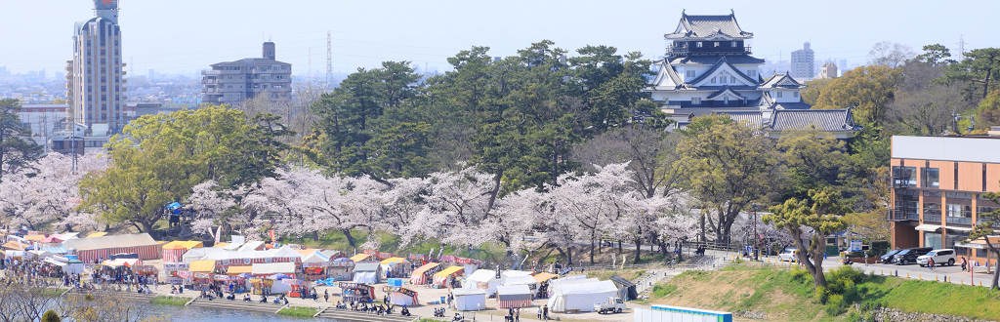
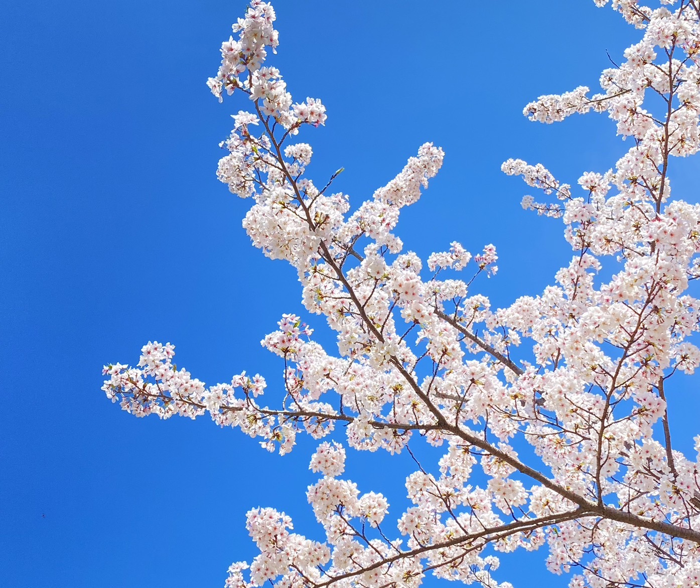

1.地元の特産品を試す：
岡崎春祭りの売店では、愛知県や岡崎市特有の食品や手工芸品が販売されます。地元の味覚を楽しむ絶好の機会ですので、みそかつや手羽先などの地元料理を試してみてください。
2.記念品を購入する：
岡崎春祭りは、徳川家康公ゆかりの地としても有名です。この地域の歴史にちなんだ記念品やお土産を売店で見つけることができます。家康公や岡崎関連のグッズを手に入れるのも良いでしょう。
3.手作りの工芸品を探る：
地元の職人による手作りの工芸品も多く販売されています。独特のデザインや手作りの品質を求めて、様々な工芸品を見て回るのは楽しい時間になるはずです。
岡崎の春祭りの売店

岡崎公園の桜

1.花見ピクニック：
岡崎公園は約800本のソメイヨシノ桜で有名で、春には美しい花見の場所となります。公園内でのピクニックは、家族や友人と一緒に桜の下で食事を楽しむ最良の方法です。持参したお弁当や売店で買った食べ物で、春の訪れを感じましょう。
2.夜桜のライトアップ：
夜になると、岡崎公園の桜はライトアップされ、昼間とは違った幻想的な美しさを見せます。夜の散策やデートに最適で、桜の下でロマンチックな時間を過ごすことができます。
3.写真撮影：
桜の季節は、写真愛好家にとっても最高のシーズンです。特に岡崎城と桜を一緒に捉えた写真は、訪れた記念になる素晴らしいショットです。春の風景をバックに、素敵な写真をたくさん撮ってみてください。